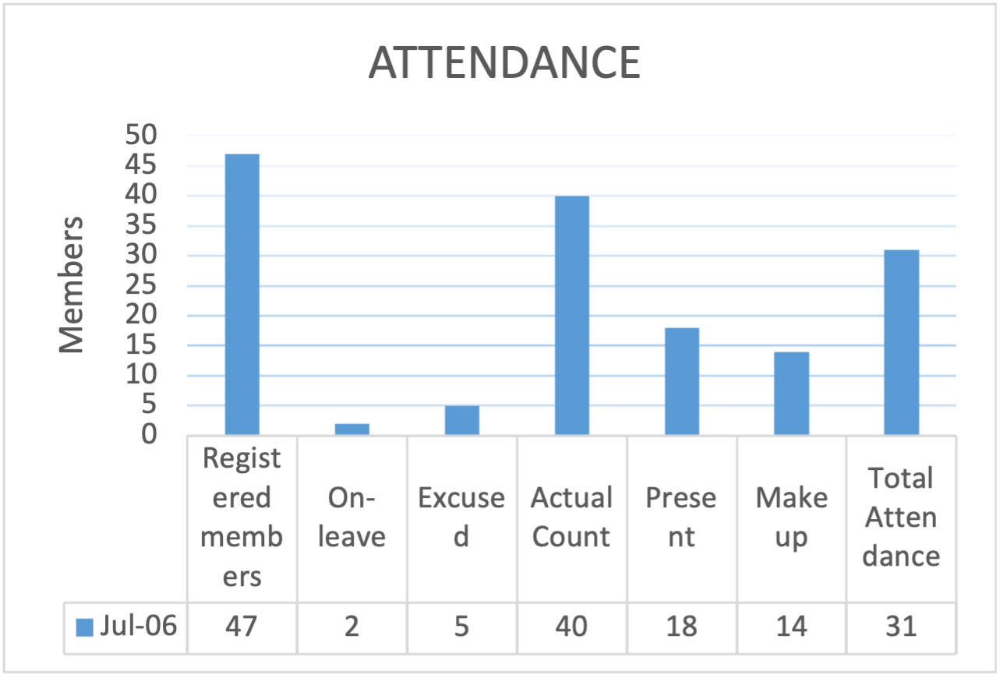

Official Club Bulletin
Volume LXXVII Issue 02
July 20, 2024
Club Meeting Program
06 July 2024
Programme
| 12:00 PM | Fellowship | |
| 12:30 | Call to Order | Pres. Susan Villanueva |
| Invocation | Dir Lou De Guzman | |
| Pambansang Awit Rotary Hymn 4 Way Test |
||
| 1:20 | Introduction of Visiting Rotarians and Guests | PP Lani Fabi |
| Entertainment | Treas Ruth Rillera | |
| Raffle | Dir.Lou De Guzman and PP Lani Fab | |
| Finest Moment | Treas Ruth Rillera | |
| 1:40 | Member's Time | PP Chris Faelnaer |
| 1:50 | President's Time | |
| Treasurer’s Report | PP Marilyn Barredo | |
| Open Forum | ||
| 2:25 | RCB Hymn | |
| 2:30 | Pilipinas Kong Mahal | |
| Adjournment | Pres. Susan Villanueva | |
PP Lani Fabi
Program Coordinator
PP Vicenia Balajo
Retrospector
Rtn Harley Wasing
Imager

Rotary District 3790
STEPHANIE URCHICK
R.I. PRESIDENT
DG Ariel Jersey
District Governor
PDG Jess Nicdao
Vice-District Governor
AG Tolitz B. Villanueva
Assistant Governor Cluster 1-C
Rotary Club of Baguio Board
Maria Jesusa Villanueva
Club President
Mariver Agayas
Vice-President/Public Imager
Levy Lloyd Orcales
Secretary
Ruth Rillera
Treasurer
Emylou De Guzman
Community Service A
Lorena Cachola
Community Service B
Modesto Bahul Jr
Community Service B
Reymund Barrios
Community Service B
Jeffrey Isip
Community Service B Co-Chair
Jose Ursua
President Nominee
Atom Mendalla
Auditor
Francis Ali Morales
TRF Chair
Maria Corazon Ocampo
Immediate Past President/Research
Arnel Cabanisas
Scholarship Chair
Vicenia Balajo
Adviser
Linda Winter
Adviser
Chris Faelnar
Adviser
Alberto Talco
Adviser
Chris Peralta
The Cañao Editor-in-Chief
Raffy Chan
The Cañao Adviser / Webmaster

President's Message
Pres. Susan Villanueva
President
Rotary Club of Baguio
As we reflect on the recent 87th Induction and Turnover Ceremony of our beloved club last July 13,2024 at Baguio Country Club, I am filled with a profound sense of gratitude and appreciation for each and every one of you who contributed to the success of that magical evening. It is with great honor and pleasure that I express my heartfelt thanks to all our sponsors, the entire Rotary family and all the people present during that magical evening.
The evening was truly a celebration of the enchanting theme of the Rotary Club of Baguio, "The Magic of Rotary." We gathered under the promise to light up the magic within us, to wield our wands of service, and to create spells of positive impact in our society.
One of the most enchanting moments was undoubtedly the captivating performance by Ms. Susan's daughter and niece. Their voices, filled with the magic of talent and passion, cast a spell of inspiration and set the tone for an evening of unity and fellowship.
We were also spellbound by the enlightening speeches from our outgoing President Ms Corazon De Ocampo and the distinguished guest of honor, Ariel Jersey. Their words wove a tapestry of wisdom and encouragement, reminding us of the transformative power we hold as members of the Rotary Club of Baguio.
The opening salvo by our dedicated members was a magical display of unity and purpose, a testament to the collective strength and resolve of our club. It was a moment that encapsulated the essence of Rotary and the sorcery we all share for serving our community selflessly.
The thrill of the raffle prizes added an element of magic and joy to the evening, sprinkling sparkles of excitement and creating lasting memories of camaraderie and shared laughter. The sumptuous dinner that followed was a feast for both the body and the soul, enchanting us as we continued to bond and celebrate in each other's company.
The distribution of souvenir magazines was a spellbinding gesture that will serve as a magical keepsake of this special evening, reminding us of the connections we have forged and the moments we have shared as members of the Rotary Club of Baguio.
To each and every one of you who illuminated the magic of the event, I offer my deepest thanks. Your dedication, passion, and commitment are the enchanted threads that weave the tapestry of our work and the impact we have on our community. Together, we have conjured an unforgettable night—one filled with love, unity, and the transformative power of Rotary magic.
As we look ahead to the future under my leadership as the new President of Rotary Club of Baguio, let us continue to embody the spirit of service and friendship that defines our club. May we always strive to wield our wands of service with purpose and passion, creating spells of positive change and illuminating the world with the magic of Rotary.
Thank you all for your unwavering support and dedication. Here's to a future filled with the enchantment of Rotary magic and the promise of creating a better world through our collective efforts.

Guest Speaker's Profile
Ariel D. Jersey
District Governor, RY 2024-2025
“A UNIQUE visionary leader with a passion for community development and business innovation”
DG Ariel D. Jersey: A Visionary Leader in Business and Community
DG Ariel D. Jersey stands as a prominent figure in both the business and social landscapes, celebrated for his exceptional leadership and entrepreneurial prowess. His journey is marked by numerous achievements and recognitions, underscoring his commitment to service and community development.
Entrepreneurial Excellence
DG Ariel's entrepreneurial journey is distinguished by notable accolades, including the prestigious 2007 Most Inspiring Tourism Entrepreneur award from Go Negosyo, presented by Philippine Center for Entrepreneurship under the auspices of President Gloria Macapagal Arroyo. His influence in the mapping industry was further acknowledged with the title "Map Guru" of the Philippines, bestowed by Secretary Joey Concepcion. As Chief Executive Officer of EZDrive and Chairman of EZMAPS, INC., DG Ariel has demonstrated a keen business acumen and a pioneering spirit in digital entrepreneurship and media information.
Leadership in Rotary
DG Ariel's dedication to Rotary International spans decades, highlighted by his various leadership roles within the organization. He served as the Past President of the Rotary Club of Dau and Angeles Midtown, and his contributions extend to roles such as Assistant Governor of RI District 3790 and District Secretary. His commitment to Rotary's mission is exemplified by his involvement in district initiatives, international events, and his instrumental role in community service projects.
Educational Background
DG Ariel's academic credentials include an Executive MBA in Business Management from Cambridge LGU, complemented by specialized programs in Digital Entrepreneurship and Media Information from the UP Open University. His educational pursuits reflect a continuous commitment to personal and professional growth, equipping him with a diverse skill set crucial for leadership roles in both business and service organizations.
Awards and Recognitions
Throughout his career, DG Ariel has garnered numerous awards, including distinctions such as Most Outstanding Assistant Governor, Rotarian of the Year, and Governor’s Special Recognition Awards. His leadership and service excellence have consistently earned him accolades from Rotary International and other prestigious institutions, affirming his impact and influence in both local and international arenas.
Continuous Learning and Skill Development
DG Ariel's proactive approach to learning is evident through his participation in various seminars and trainings, focusing on desktop publishing, cartography, mapping technology, and digital arts. His diverse skill set underscores his adaptability and readiness to embrace new challenges, ensuring his relevance in an ever-evolving global landscape.
Community and Social Engagements
Beyond his professional achievements, DG Ariel remains actively engaged in several social and business organizations, including the International Map Trade Association and the Knights of Columbus. His memberships underscore his commitment to networking, collaboration, and community engagement, reflecting his broader impact beyond organizational boundaries.
Conclusion
District Governor Ariel D. Jersey epitomizes a multifaceted leader whose visionary leadership, entrepreneurial spirit, and unwavering commitment to community service continue to inspire and transform lives. His journey, marked by excellence and dedication, serves as a testament to the profound impact of visionary leadership in fostering positive change both locally and globally. As he continues to chart new paths and embrace new challenges, DG Ariel remains a beacon of inspiration and achievement in business, community service, and personal development.

2024-25: The Magic of Rotary
RI President-elect Stephanie Urchick celebrates the magic of Rotary. She says members create that magic with every project completed, every dollar donated, and every new member of Rotary.
To know more of this year's Rotary Theme, click on this link.
RCB Roster
Dir. Mariver AGAYAS
COMMUNCTN/MEDIA-Correspondent
Dir. Modesto BAHUL
GOVERNMENT-Judiciary
PP/Dir. Vicenia BALAJO
HEALTH CARE-Obstetrics Gynecology
PP Marilyn BARREDO
BANKING/MONEY-Info Technology
Dir. Reymond BARRIOS
MKTG/SALES-Animal Feeds
PP Ricardo BONDOC Jr.
SOCIAL SERVICE-Entrepreneurship Dev
PP/Dir. Arnel CABANISAS
MGMT/ADMIN-Executive Mgmt
Rtn. Evangeline CACHO
FOOD INDUSTRY-Catering
Dir. Lorena CACHOLA
SERVICES-Personal Care
PP Anita CALABIAS
INSURANCE-Entrepreneurship
PP Mia Joy CAWED
LEGAL-Judiciary
PP Rafael CHAN
ARCHITECTURE-Green Building
PP Dionisio CLARIDAD
HEALTH CARE-Administration
Dir. Emylou DE GUZMAN
FOOD INDUSTRY-Finance Manager
Dir. Ericson DE GUZMAN
PUBLIC RELATIONS-Consumer Welfare
Rtn. Dwight DULNOAN
MINING-Exploration
PP Mary Leilani FABI
COMMUNCTN/MEDIA-Telecom
PP/Dir. Chris Fernando FAELNAR
ENGINEERING-Electrical Engineering
PP Cyrus FAGAR
ENGINEERING-Civil Engineering
PP Elizabeth FERNANDEZ
LEGAL-Criminal Law
Rtn. Glenliel FLORES
CONSTRUCTION-Comm'l/Resid'l Contracting
Dir. Jeffrey ISIP
INSURANCE-Risk Management
PP Gormito KAUR
MKTG/SALES-Retail Sales
Rtn. Ailyn KINDIPAN
EDUCATION-Art
PP Ben LADILAD
AGRI/FORESTRY-Research & Development
Rtn. Estela LANDAYAN
EDUCATION-Secondary
PP Alfredo LAYGO
EDUCATION-Medical
PP Evangeline MARANAN
MGMT/ADMIN-Special Events
PP/Aud. Alma Teresa MENDALLA
BANKING/MONEY-Regional Operations
PP/Dir. Ali MORALES
BANKING/MONEY-Bank Manager
IPP/Dir. Maria Corazon OCAMPO
EDUCATION-Consultancy/Entrepreneurship
Sec. Levy Lloyd ORCALES
GOVERNMENT-City Legislation
Rtn. Elaine PAREDES
MGMT/ADMIN-Entrepreneurship
PP/EIC Christopher PERALTA
HEALTH CARE-Diabetology
Rtn. Eduardo RAMOS
SERVICES-Memorial Admin
Treas. Ruth RILLERA
HEALTH CARE-Nurse
Rtn. Arlene Joy SUMALAG
ART & DESIGN-Handicrafts
PP Benito SUNGA
HEALTH CARE-Urology
PP Alberto TALCO
ENGINEERING-Civil Engineering
Rtn. Ronald Carlton TAN
REAL ESTATE-General Practice
Dir. Jose URSUA
SCIENCE/TECH-OBGyne Sonology
Rtn. Anecita VIERNES
FOOD INDUSTRY-Preserved Items
Pres. Jesusa VILLANUEVA
GOVERNMENT-Deeds Examination
Rtn. Harly WASING
ENTERTAINMENT-Announcer
Dir. Peter WASING
ENTERTAINMENT-Journalist
PDG/PP Linda WINTER
HEALTH CARE-Dentistry

Secretary's Report
Sec. Levy Orcales
Secretary
Rotary Club of Baguio
Club Activities
9 July – Rainwater harvesting piping system to comfort rooms at Baguio Central School (Phase 2, area 2)
DESCRIPTION: The Rotary Club of Baguio with its commitment in the delivery of reusable water for the comfort rooms of Baguio Central School has successfully installed a piping system from the rainwater harvesting system for the use of the students and teachers.
Attended by: PP Chris F
9 July – Review and finalization of club goals
DESCRIPTION: The Rotary Club of Baguio, with some members of the board, has convened to review and finalize the club goals to be aligned with the District Goals. This is in time for the club’s presentation during the Governor’s visit on July 13.
Attended by: Pres Susan, Dir Lorena, IPP Cora, PP Lani, Dir Reymund and Sec Levy
10 July – Presentation of BIOGRUB to the Barangay officials of Aurora Hill
DESCRIPTION: The Rotary Club of Baguio, anchored on its ideal for research and development, has presented a possible solution to the problem of Baguio on the impending non-collection of Biodegradable waste. The BIOGRUB project was presented to the barangay officials of the 13 barangays of Aurora Hill by IPP Cora as a result of their research with her former students.
Attended by: Pres Susan, IPP Cora, PP Lani and Sec Levy
Club Attendance (29 June 2024)
PP Chris P, PDG Linda, Treas Ruth, Dir Lorena, Dir Modz, PP Libby, PP Veeh, PE Susan, Dir Vangie, Dir Reymund, PP Lani, Pres Cora, Sec Levy, PP Alfred, PP Mia, PP Raffy, PP Baby, and EIC Arlene
We Wish For Your Presence Next Time
IPP Ali (mu), PP Marilyn (mu), Dir Lou (mu), PP Bert (mu), PP Chris F (mu), PP Atom (mu), PP Anet (mu), Rtn Nancy (mu), Rtn Peter (mu), Rtn Harley (mu), Dir Joe (mu), Dir Vell (mu), PP Jun, PP Arnel, PP Diony (exc), Rtn Eric, Rtn Ike (exc), PP Cy (exc), Rtn Glenn (ol), Dir Jeff, Rtn Ailyn (ol), PP Ben (exc), PAG/PP Gigi, Rtn Elaine (ol), Rtn Ed, Rtn Annie (mu), PP Benny (exc), and Rtn Tonton
Upcoming Club Activities
- 13 July – Governor’s visit. President’s hall, Baguio Country Club @ 10:00am
- 13 July – RCB Club induction and turn-over ceremonies. Ballroom, Baguio Country Club @ 6:00pm
July Birthdays
- 15 July – Rtn Ike
- 18 July – Sec Levy
- 20 July – Rtn Arlene
- 25 July – Rtn Ailyn


In Retrospect
Dir. Modz Bahul
Membership Co-Chair
Rotary Club of Baguio
.jpg)
.jpg)
.jpg)
.jpg)
.jpg)
.jpg)
.jpg)
.jpg)
.jpg)
.jpg)
.jpg)
.jpg)
RCB Regular Meeting - June 29, 2024
Dubbed “retrospect Awards Night” and dominated by black and white outfits, the June 29, 2024 RCB meeting was held at Jasper Hall, Hotel Supreme, Magsaysay Road, Baguio City. It was the last for RY 2023-2024 under the leadership of Pres. Cora Ocampo. It was also the last hosting for Team Pasikat, and it was ably steered by PP Chris Peralta as Program Coordinator. DEI was the topic of our Guest of Honor and Speaker, AG Mary Jane Noble.
The Awards Night, which PP Veeh Balajo described as “Fabulous Awards for Members of Action and Service” lending more significance to its name “retrospect”, was promptly called to order by Pres. Cora at 6:00 p.m. It was started by an invocation led by IDir. Lou De Guzman, followed by the singing of the Pambansang Awit, Rotary Hymn, and the 4-way Test.
IPP Ali Morales next introduced the guests in attendance, namely, RAPP Oyee Faelnar, RA Ces Barrios, Rotakids Markus Ocampo and Sonny Balajo, and IDir. Lou's guest, Sandra; Rotakid Ian Ocampo arrived later during the program. IPP Ali also presented the members of Team Pasikat led by PP Libby Fernandez; present among the Team members, aside from PP Libby, PP Chris, and IPP Ali are PDG Linda Winter, PP/Treas. Marilyn Barredo, Dir. Lorena Cachola, IDir. Lou De Guzman, Asst.Treas/IDir. Ruth Rillera, and myself. A sumptuous dinner and lively fellowship followed.
After dinner, Team Pasikat presented a “payong dance” for entertainment. After that, Club Evaluation followed with “baby” Rotarian Harly Wasing, and “senior” Rotarian, PP Alfred Laygo, as evaluators. Rtn. Harly expressed pride as an RCB member being among “brilliant minds working together to help improve the community” and vowed to help improve the Club's FB page to highlight RCB's accomplishments and “demonstrate to others the value of our organization.”
On the other hand, congratulating Pres. Cora and the RY 2023-2024 RCB Board for a “job well done” and giving them a grade of “outstanding”, PP Alfred highlighted the Club's efforts to build goodwill and better friendships through its 133 activities across the seven (7) areas of focus in Rotary service during the Rotary Year that led to the Club's being awarded multiple Gold, Silver and Bronze Awards in the District 3790 Yearend Awards. Notably, RCB is among the top clubs in the District as to service projects along with annual and polio plus giving, and it was given a Gold Award as a Gold Club having 50 members during the Rotary Year. Pres. Cora was also awarded a Rotarian Excellence Award, and a Silver Award for Sec. Levy Orcales. Nonetheless, PP Alfred, noted that while Caῆao was consistently awarded among the top club magazines in the past years, no club bulletin award was given out this Rotary Year. He also noted the dwindling attendance of Club members during meetings, hence, while recognizing that Rotarians are only volunteers such that they and cannot be forced to work, he challenged the Club leaders to “revive”, “encourage”, and “stimulate” all the members “for more interaction with one another” and to participate in meetings and other Club activities.
President's Time, Pres. Cora shared her time for Sec. Levy to present a report on the Club's various accomplishments for the Rotary Year notably measured in number of volunteer hours (6,972 hours), funding performance (equivalent to USD24,075.78 Club funds and personal cost of members), and number of volunteers (1,759 people) in the 133 Club projects that included not just Club members but also from partner organizations. Pres. Cora next gave out “certificate of active members” indicating their RI members' numbers and dates of induction, along with individual End Polio pictures. She also gave recognition and awards to the Club officers and members (“Service Above Self Enabler of the Club”), “Haligi Awards” to all Past Presidents, special awards to project leads (including naming Team Pasikat as the Best Team for the 3rd consecutive year!), PHF awards, Philanthropist Awards to PP Atom Mendalla for her Caῆao sponsorship and IDir. Lou De Guzman for Project One, and The Rotarian of the Year Award to PP Chris Faelnar.
At 9:00 p.m., after the distribution of awards, PP Libby gave her closing remarks highlighting among others Rotary as Family. Then Team Pasikat gave away big blue umbrellas as tokens for the Club members and guests present. And after the singing of the RCB Hymn and Pilipinas Kong Mahal, Pres. Cora adjourned the meeting at 9:10 p.m., but fellowship, including some dancing and a lot more picture taking, continued until 9:45 p.m.
It was another great night of Team Pasikat hosting... many thanks to everyone present who made the Club's yearend event a special one especially for outgoing Pres. Cora, who bravely proceeded with the event despite the passing away of her centenarian grandmother.
The Four Way Test
of the the things we think, say or do
Is it the TRUTH?
Is it FAIR to all concerned?
Will it build GOODWILL and BETTER FRIENDSHIPS?
Will it be BENEFICIAL to all concerned?
Editor-in-Chief's Page
EIC Chris Peralta
Rotary Club of Baguio
Be the Writer
The editor is responsible for the creation of all kinds of material meant to share your club’s good works. But the first step is to make sure you have a good understanding of how to write and what to write. Here are some tips.
- Make it informative. Offer useful tips, simplify anything complicated and tell people what is coming up.
- Make it relevant. Irrelevant content can cause readers to disregard your work. If you write about things that aren’t pertinent, people may not pay attention when you write about the important things.
- Make it right. Always check your work for errors. You will want to be on the lookout for grammar and spelling mistakes. Also be sure to fact-check — you don’t want to communicate the wrong time or date and cause problems for members.
- Make it concise — but complete. Write at a length appropriate for the medium. Obviously, a newsletter article can be longer than a school announcement. Always make it long enough to divulge pertinent information, but not so long that people get bored.
- Make it visually appealing. Follow the Key Club brand guide (keyclub.org/brandguide) to ensure your publications are appealing and look like Key Club. You will also want to include photography and easily readable fonts.
- Make it engaging. You want to help make sure your messaging is relatable. Try to create content that is thought-provoking, conversational and touches on current trends.
- Make it reflect your club. In photography and quotes, always be inclusive. Take photography and share quotes that feature a variety of members. People are more likely to read or like something they feel connected to in some way. The best way to make people feel connected is to be inclusive. Before you publish any media, such as photographs, get permission from every person who appears in it. For minors, permission from a parent or legal guardian is also required.
It could be illegal to do otherwise. A photo release can be found on the Key Club website.

Our Official Club Bulletin has been called The Cañao. “Cañao” (pronounced as kan-yau) is actually the local term for the dance during native feasts or celebrations in the highlands of the Cordilleras- in Northern Luzon of the Philippines.
This is depicted in our Cañao emblem which shows a number of human figures in deep concentration— absorbed in ritual dance.
The attention, focus, commitment and unity of the club’s members is represented by the dancing figures—in celebration or expectation of a bountiful harvest; much as we actually do—in anticipation of the joy derived from public service to the community– always coupled with fellowship. Hence, the sub-title of “A Celebration of Service.”
In the Spotlight
by PP Vicenia “Veeh” Balajo
Where Did Mount Apo, Mount Mayon, and Mount Pulag Meet ?
On May 26, 1972, a great historic event occurred - President Richard M. Nixon and Soviet leader Leonid Brezhnev signed the Anti-Ballistic Missile Treaty in Moscow. More importantly, in the Philippines, in the province of North Cotabato, City of Kidapawan, located at the foot of Mt. Apo, on this historic date, May 26, 1972, a handsome baby boy was born to the Barrios family.
Reymund spent his childhood years in this scenic place with many tourist attractions. He acquired his elementary education in the Notre Dame of Kidapawan ('80-'85). Later on, he was sent to Manila for his secondary education at San Sebastian College ('85-'89). (On a side note, these were the times when significant political events happened in Manila, specifically in the streets fronting the college). He pursued his studies and must have been a very diligent student in the premier world class engineering school, the Mapua Institute of Technology (now Mapua University), graduating with the course in B.S. Civil Engineering in just 5 years (('89-'94).
After graduation, he was employed by Tasco, Inc., an exclusive importer of MRF, Apollo & Mega tires, Alliance (from Israel), and bathroom fixtures (exclusive distributor of TOTO from Japan). He rose from the ranks from the warehouse till he became a sales manager, and eventually a regional manager.
While working in Tasco, Inc. in Cubao, Quezon City, Reymund was struck by Cupid with love at first sight with a beautiful lass, who turned out to be working in the HSBC Bank, Quezon City branch. That’s when the grandiose Mt. Apo met the beauteous Mt. Mayon, as Cecil hails from Legazpi City, Albay.
“And the two became one..”
Daring and adventurous as he was, Reymund left Tasco, Inc. in 2008, and put up his own company, RD’Square Enterprises, the exclusive distributor of B-Meg feeds in Baguio/ Benguet. This company has been awarded almost yearly with the Quality of Excellence.
The couple finally settled in Benguet (where Mt. Pulag is.) Reymund and Cecil are truly blessed with two handsome smart and intelligent sons, Rynne Daven, 20 yrs. old, and Rafael Domnick, 17 yrs. old.
Reymund was invited to the Rotary Club of Baguio by previous RCB member Bennie Laranang. After attending just three RCB meetings, he was surprised that he was asked to attend a fireside chat. And that Saturday in 2014, he was inducted during the term of then Pres. Uwe Koeller. Since then, he has been joining and initiating activities and projects, as RCB director, on environmental protection, water sanitation, livelihood projects, and organizing RCCs.
What enticed Dir. Reymund to Rotary was not only his love for community service but, more than anything, the Four Way Test of Rotary, in everything we think, say and do. His motto in life is – “It is good to be blessed, but it is better to be a blessing.” His fervent wish is for RCB to carry on the ideals of service and be an inspiration to the community for a long long time. He likewise wishes that RCB would recruit more members who will be active in rendering service to our community. This is Dir. Reymund Barrios, a Potential Prospective President of the Rotary Club of Baguio in the near future.